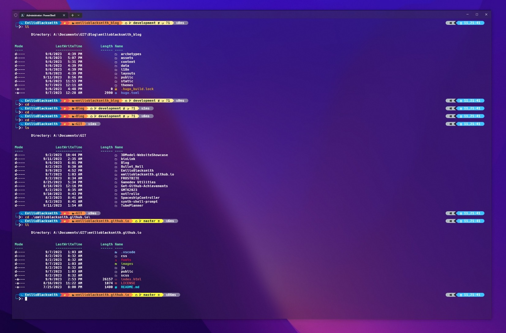
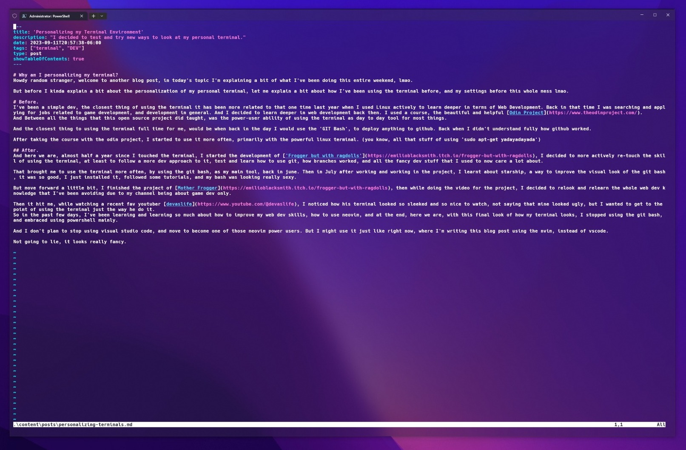

Why did I Personalized my Terminal?
Howdy random stranger, welcome to another blog post, in today’s topic I’m explaining a bit of what I’ve been doing this entire weekend, lmao.
But before I kinda explain a bit about the personalization of my personal terminal, let me explain a bit about how I’ve been using the terminal before, and my settings before this whole mess lmao.
The Process…
Before.
I’ve been a simple dev, the closest thing of using the terminal it has been more related to that one time last year when I used Linux actively to learn deeper in terms of Web Development. Back in that time I was searching and applying for jobs related to game development, and development in general. And I decided to learn deeper in web development back then. I used a course, the beautiful and helpful Odin Project. And Between all the things that this open source project did taught, was the power-user ability of using the terminal as day to day tool for most things.
And the closest thing to using the terminal full time for me, would be when back in the day I would use the ‘GIT Bash’, to deploy anything to github. Back when I didn’t understand fully how github worked.
After taking the course with the odin project, I started to use it more often, primarily with the powerful linux terminal. (you know, all that stuff of using ‘sudo apt-get yadayadayada’)
After.
And here we are, almost half a year since I touched the terminal, I started the development of ‘Frogger but with ragdolls’, I decided to more actively re-touch the skill of using the terminal, at least to follow a more dev approach to it, test and learn how to use git, how branches worked, and all the fancy dev stuff that I used to now care a lot about.
That brought me to use the terminal more often, by using the git bash, as my main tool, back in june. Then in July after working and working in the project, I learnt about starship, a way to improve the visual look of the git bash, it was so good, I just installed it, followed some tutorials, and my bash was looking really sexy.
But move forward a little bit, I finished the project of Mother Frogger, then while doing the video for the project, I decided to relook and relearn the whole web dev knowledge that I’ve been avoiding due to my channel being about game dev only.
Then it hit me, while watching a recent fav youtuber devaslife, I noticed how his terminal looked so sleeked and so nice to watch, not saying that mine looked ugly, but I wanted to get to the point of using the terminal just the way he do it. So in the past few days, I’ve been learning and learning so much about how to improve my web dev skills, how to use neovim, and at the end, here we are, with this final look of how my terminal looks, I stopped using the git bash, and embraced using powershell mainly.

And I don’t plan to stop using visual studio code, and move to become one of those neovim power users. But I might use it just like right now, where I’m writing this blog post using the nvim, instead of vscode.

Not going to lie, it looks really fancy.
Misc.
TODO of the Week
- Finish the Script from the video about the videogame Mother Frogger
- Learn a bit more about javascript and how can I make my tube planner idea
- Finish the first draft of the video, in terms of the video editing
- Finish my Blog Website using HUGO.
- Change Branding from my youtube Channel
Thanks for reading this
And that would be a small talk about why I did personalized my terminal, and somewhat why did I changed to Powershell. Hope that you found it interesting to read. Thanks for being here, love you…